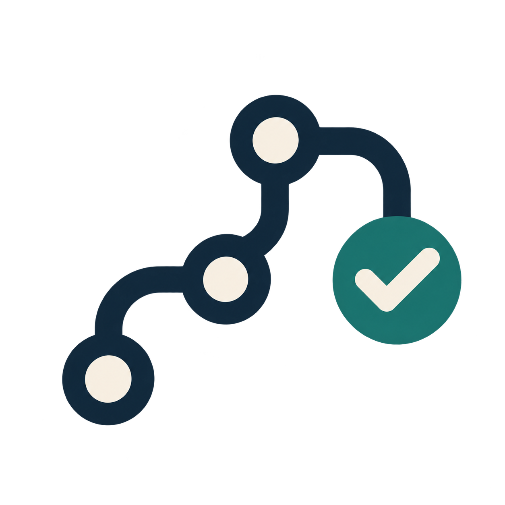

Practice decisions with evidence

ProofPath Lab is a skills-only plugin by BalanX LLC for exploring fictional workflow decisions. Work through 16 synthetic cases, cite policy and consent versions, and see why a workflow should hold, refresh, reuse an existing receipt or propose a submission.
Three ways to learn
- Walk through a changed-policy case before revealing its answer.
- Explain what an uncertain or duplicate receipt actually proves.
- Score an explicit decision with the optional offline Python checker.
The plugin has no account, server, API key or purchase flow. Python 3 is needed only for executing the bundled checker. Hosts without execution can use the instructions and fixture data for explanations, labeled as unexecuted.
Open, small and synthetic
Expected answers are public. The rule-based reference and deliberately brittle comparison script do not measure a language model. No real applicants or external systems are involved, and a passing case does not establish production safety.
Explore the browser lab · Inspect the public project